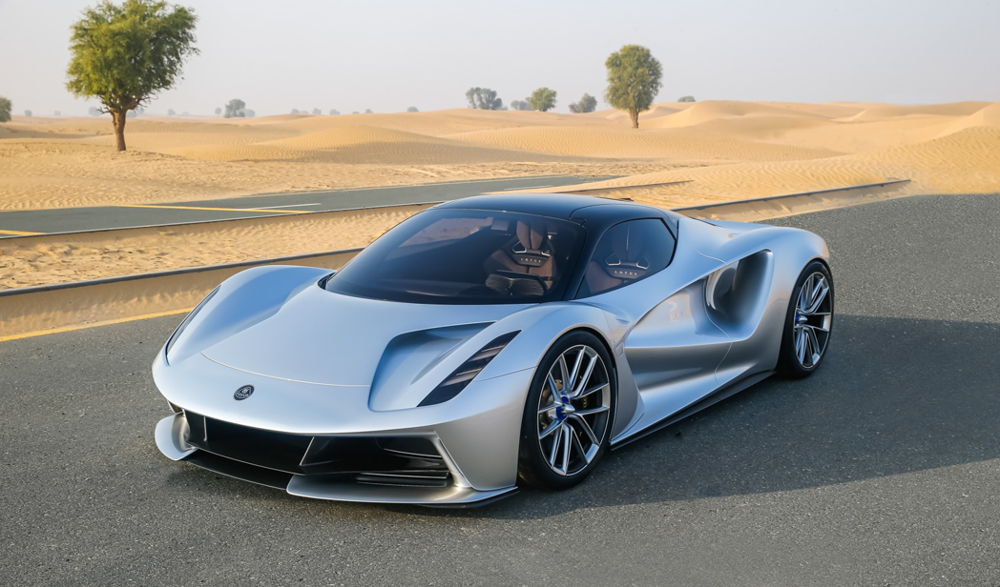

El mas potente: Lotus Evija
El Lotus Evija es un hypercoche eléctrico de producción limitada, diseñado y fabricado por Lotus Cars, el primer vehículo eléctrico de la marca. Presentado en 2019, se caracteriza por su chasis monocasco de fibra de carbono, su potente motor eléctrico y su diseño deportivo.

Volver a la pagina principal: